def load_benchmark_plot_data(suffix, **kwargs):
"Loads the data required for the plotting."
name = f"bench_plot_data_{suffix}.pkl"
bench_path = Path("../benchmarks/")/name
if bench_path.exists():
with open(bench_path, 'rb') as f:
plot_data = pickle.load(f)
else:
plot_data = process_benchmark_data(suffix, **kwargs)
return plot_data
def process_benchmark_data(suffix, max_n=16, max_trains=50, algorithms=['DQN', 'MC', 'BFS'], save_path=None):
"Processes the benchmark data for the plots."
results = {algorithm: {} for algorithm in algorithms}
for N in range(5, max_n+1):
B, J = 1, [i%3 for i in range(N)]
H = XXHamiltonian(Chain1D(N), B, J)
for algorithm in algorithms:
try:
benchmark = load_benchmark(H, budget, algorithm, suffix=suffix)
if algorithm == 'DQN':
rewards = best_so_far(arrange_shape(benchmark['exploration']['oracle_rewards'][:max_trains]))
else:
rewards = best_so_far(arrange_shape(benchmark['oracle_rewards'][:max_trains]))
best_mean = np.mean(rewards, axis=0)
best_std = np.std(rewards, axis=0)
try: over95 = np.where(best_mean >= 0.95)[0][0]
except: over95 = np.inf
results[algorithm][N] = (best_mean, best_std, over95)
except:
pass
if save_path is None: save_path = Path(f"../benchmarks/bench_plot_data_{suffix}.pkl")
with open(save_path, 'wb') as f:
pickle.dump(results, f, protocol=pickle.HIGHEST_PROTOCOL)
return resultsPlots
Plotting is everything!
Benchmark plots
In the paper we compare the performance of different methods. Here we provide the source code to reproduce the plots (Figure 5).
def plot_benchmark(results, suffix, ylim=(0, 2300), lw=3.5, ms=10, fs=18, ts=16, n_max=17, algorithms=["DQN", "MC", "BFS"]):
linestyles = ['-', ':', '--']
markers = ['s', 'o', 'h']
fig = plt.figure(figsize=(12, 5))
for a, alg in enumerate(results.keys()):
if alg not in algorithms: continue
plot_vline = False
ns, times = [], []
for n, (_, _, over95) in results[alg].items():
if n <= n_max: ns.append(n); times.append(over95)
if times[-1] == np.inf: ns.pop(-1); times.pop(-1); plot_vline = True
elif ns[-1] < n_max: plot_vline = True
label = alg if alg != 'DQN' else 'RL'
plt.plot(ns, times, linestyle=linestyles[a], linewidth=lw, marker=markers[a], ms=ms, label=label)
if plot_vline:
plt.vlines(ns[-1], 0, ylim[1], linestyles='dashed', alpha=0.7)
plt.text(ns[-1], 0.93*ylim[1], r"$\rightarrow$ Not found", fontsize=fs)
plt.grid(alpha=0.5)
plt.legend(fontsize=ts, loc="upper left")
plt.xlabel("System size", fontsize=fs)
plt.ylabel("States to 95% optimality", fontsize=ts)
plt.tick_params(labelsize=ts)
plt.savefig(Path(f"../figures/benchmark_sizes_{suffix}.pdf"), bbox_inches='tight')suffix = 'half_3'
results_half = load_benchmark_plot_data(suffix)plot_benchmark(results_half, suffix, n_max=16)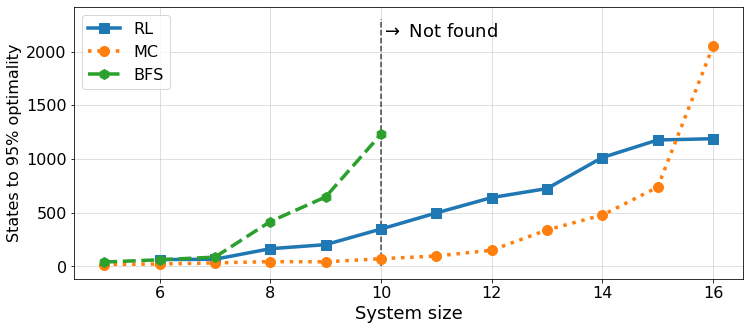
suffix = 'all_3'
results_all = load_benchmark_plot_data(suffix)plot_benchmark(results_all, suffix, ylim=(0, 3500), n_max=16)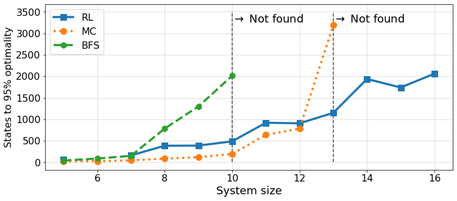
n = 11
linestyles = ['-.', ':', '--']
linewidth = 3.5
fs = 18
ticksize = 15
plt.figure(figsize=(10, 5))
for a, algorithm in enumerate(algorithms):
plt.plot(results[algorithm][n][0], linestyle=linestyles[a], linewidth=linewidth, label=algorithm)
plt.grid()
plt.legend(fontsize=ticksize)
plt.tick_params(labelsize=ticksize)
plt.xlabel("New visited states", fontsize=fs)
plt.ylabel("Proximity to optimal solution", fontsize=fs);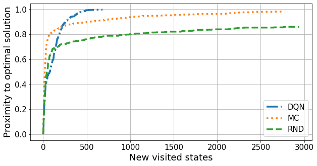
Transfer learning across phases
We analyse the effect of transfer learning across different phases of the same Hamiltonian. Here we provide the source code to reproduce the plots (Figure 6).
N = 6
budget = 185
B0 = 5
path = Path(f"../benchmarks/TL_N{N}_{budget}_from_B{B0}.pkl")
with open(path, 'rb') as f:
TL_evaluation = pickle.load(f)def convergence_time(results, tol=5e-4, T=50, t_avg=20, return_diffs=False):
"Returns the convergence with criterion of not changing result by `tol` for `T` epochs."
if 'training' in results.keys(): results = results['training']
rewards = arrange_shape(results['rewards'])
mean_rewards = np.mean(rewards, axis=0)
epochs = len(mean_rewards)
moving_avg = np.convolve(np.array([1/t_avg]*t_avg), mean_rewards, mode='valid')
diffs = np.abs(moving_avg[1:] - moving_avg[:-1])
diff_variation = np.convolve(np.array([1/T]*T), diffs, mode='valid')
try: t = np.where(diff_variation <= tol)[0][0]
except: t = len(mean_rewards)
if return_diffs: return t + 2*T, moving_avg, diff_variation
return t + T
def indiv_convergence_time(results, max_epochs=800, **kwargs):
"Similar to `convergence_time` but with each agent."
results = results['rewards']
times = [convergence_time({'rewards': [res[:max_epochs]]}, **kwargs) for res in results]
return np.array(times)
def get_indiv_times(tl_eval, convergence_crit=None):
"Provides convergence times from individual ratios."
default_crit = {'T': 50, 't_avg': 100, 'tol': 2e-4}
convergence_crit = {**default_crit, **convergence_crit} if convergence_crit is not None else default_crit
Bs = list(TL_evaluation.keys()); Bs.sort()
time_ratios, time_err = [], []
for b in Bs:
ts_tl = indiv_convergence_time(tl_eval[b]['tl'], **convergence_crit)
ts_0 = indiv_convergence_time(tl_eval[b]['vanilla'], **convergence_crit)
t0, ttl = ts_0.mean(), ts_tl.mean()
ratio = ttl/t0
ratio_std = np.sqrt((1/t0)**2*ts_tl.var() + (ttl/t0**2)**2*ts_0.var())
time_ratios.append(ratio)
time_err.append(ratio_std/np.sqrt(len(ts_0)))
return Bs, np.array(time_ratios), np.array(time_err)inset_Bs = [0., 1.5, 2., 4.]
ax_width, ax_length = 0.25, 0.2
max_epochs = 700
refs = ["(a)", "(b)", "(c)", "(d)"]
plot_rewards_tl = [np.mean(TL_evaluation[b]['tl']['rewards'], axis=0)[:max_epochs] for b in inset_Bs]
plot_rewards_cs = [np.mean(TL_evaluation[b]['vanilla']['rewards'], axis=0)[:max_epochs] for b in inset_Bs]
def plot_subplot(ax, tl_rewards, cs_rewards, xlabel=False, legend=False, ref="(a)", ylim=[-0.05, 1.05]):
ax.plot(cs_rewards, linewidth=3, label="CS")
ax.plot(tl_rewards, linewidth=3, label="TL")
ax.tick_params(labelbottom=xlabel)
ax.text(0.1, 0.7, ref, fontsize=16)
if xlabel: ax.set_xlabel("Training Episode", fontsize=20)
if legend: ax.legend(fontsize=14, loc='lower right')
ax.tick_params(labelsize=16)
ax.set_ylim(ylim)
ax.grid()
fig = plt.figure(figsize=(14, 5))
gs0 = gs.GridSpec(1, 3, figure=fig)
ax1 = fig.add_subplot(gs0[:-1])
# Times
Bs, time_ratios, time_errs = get_indiv_times(TL_evaluation)
ax1.fill_between(Bs, time_ratios-time_errs, time_ratios+time_errs, alpha=0.25)
ax1.plot(Bs, time_ratios, 's-', ms=7, lw=2)
ax1.tick_params(labelsize=16)
ax1.set_xlabel("B/J", fontsize=20)
ax1.set_ylabel(r"$t_{TL}/t_0$", fontsize=20);
ax1.grid(alpha=0.5)
for b, ref in zip(inset_Bs, refs):
if b != 2: dx, dy = 0.1, 0.05
else: dx, dy = 0.23, 0.
x, y = b-dx, time_ratios[np.where(np.array(Bs) == b)[0][0]]+dy
ax1.text(x, y, ref, fontsize=16)
ymin, ymax = ax1.get_ylim()
ax1.vlines(0.75, ymin*1.2, ymax*0.95, linestyles='dashed', alpha=0.5)
ax1.vlines(1, ymin*1.2, ymax*0.95, linestyles='dashed', alpha=0.5)
ax1.vlines(2, ymin*1.2, ymax*0.95, linestyles='dashed', alpha=0.5)
# Trainings
gs1 = gs0[-1].subgridspec(4, 1)
axes2 = [fig.add_subplot(gs1[i]) for i in range(4)]
for i, ax in enumerate(axes2):
plot_subplot(ax, plot_rewards_tl[i], plot_rewards_cs[i], xlabel=i==3, legend=i==0, ref=refs[i])
fig.text(0.635, 0.5, "Reward", va='center', rotation='vertical', fontsize=20);
plt.savefig(f"../figures/TL_bench_N{N}_{budget}_from_B{B0}.pdf", bbox_inches="tight")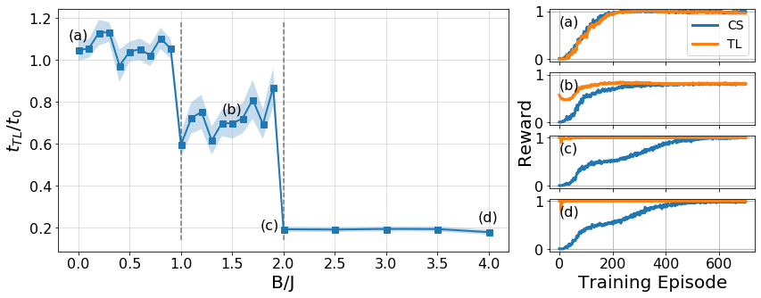
Energy bounds at different system sizes
We also study the energy bounds provided by the same qualitative solutions at different system sizes in Appendix C. With the following code you can obtain the energy bounds along one phase of the XX Hamiltonian for several sets of constraints.
from bounce.environment import SdPEnvironment
from bounce.sdp import SdPEnergySolverdef test_configs(confs, N, Bs):
"Tests a list of configurations for the XX Hamiltonian in the range of Bs (J=1)."
J = 1
energies = []
for B in tqdm(Bs):
H = XXHamiltonian(Chain1D(N), B, J)
e = SdPEnvironment(H, SdPEnergySolver(), budget)
c_energies, c_params, c_layouts = [], [], []
for c in confs:
e.reset()
e.state[:N] = 1
e.state[c] = 1
es, ps, _ = e.get_values()
c_energies.append(es)
c_params.append(ps)
c_layouts.append(e.layout)
energies.append(c_energies)
return np.array(energies), np.array(c_params), c_layouts
def plot_tests(energies, params, labels, Bs, norm=False, figsize=(8, 4), fontsize=16, labelsize=14):
plt.figure(figsize=figsize)
for energy, params, label in zip(energies.T, params, labels):
plt.plot(Bs, energy, label=label+f" ({params})")
plt.grid()
plt.legend(fontsize=labelsize)
plt.xticks(Bs[::2])
plt.xlabel("B/J", fontsize=fontsize)
plt.ylabel("Energy bound per spin" if norm else "Energy bound", fontsize=fontsize)
plt.tick_params(labelsize=labelsize)
plt.axvspan(0, 0.75, facecolor='C0', alpha=0.1)
plt.axvspan(0.75, 1., facecolor='C1', alpha=0.1)
plt.axvspan(1., 2., facecolor='C2', alpha=0.1)
plt.axvspan(2., 2.1, facecolor='C3', alpha=0.1);
def save_tests(energies, params, layouts, N):
save_path = Path(f"../benchmarks/test_{N}.pkl")
with open(save_path, 'wb') as f:
pickle.dump((energies, params, layouts), f, protocol=pickle.HIGHEST_PROTOCOL)
def load_tests(N):
save_path = Path(f"../benchmarks/test_{N}.pkl")
with open(save_path, 'rb') as f:
energies, params, layouts = pickle.load(f)
return energies, params, layoutsIn every system size, we compute the bounds obtained with different layouts that we store in the list confs. In the code below, all the configurations that are never optimal are commented out. This way, we can call test_configs to compute the bounds for each layout given several values of the external magnetic field \(B\) (assuming \(J=1\)).
We perform the entire analysis for sizes \(n=6, 12, 24\) and \(36\).
N = 6
confs = [np.arange(0, N, 2)+N,
np.concatenate((np.array([0]), np.arange(1, N-1, 2)))+N,
# np.arange(0, N//2, 1)+N, # double overlap
np.arange(0, N, 3)+N,
np.arange(0, 1)]
Bs = np.arange(0, 2.2, 0.1)
energies_6, params_6, layouts_6 = test_configs(confs, N, Bs)
save_tests(energies_6, params_6, layouts_6, N)# Load previous results
Bs = np.arange(0, 2.2, 0.1)
energies_6, params_6, layouts_6 = load_tests(6)labels = ['(a) 3 T, 0 P', '(b) 3 T, 1 P', '(c) 2 T, 2 P', '(d) 0 T, 6 P']
# Absolute bounds
plot_tests(energies_6, params_6, labels, Bs)
plt.title("N=6", fontsize=16);
plt.savefig("../figures/pattern_test_N6.pdf", bbox_inches="tight")
# Normalized bounds
plot_tests(energies_6/6, params_6, labels, Bs, norm=True)
plt.title("N=6", fontsize=16);
plt.savefig("../figures/pattern_test_N6_norm.pdf", bbox_inches="tight")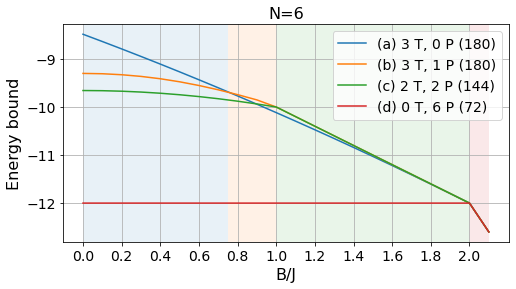
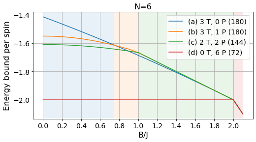
N = 12
confs = [np.arange(0, N, 2)+N,
np.concatenate((np.array([0]), np.arange(1, N//2-1, 2), np.array([N//2]), np.arange(N//2+1, N-1, 2)))+N,
np.arange(0, N, 3)+N,
np.arange(0, 1),
np.concatenate((np.array([0]), np.arange(1, N-1, 2)))+N,
# np.sort(np.concatenate((np.arange(0, N, 4), np.arange(1, N, 4))))+N, # tiplet-triplet-pair
# np.arange(0, N, 4)+N, # triplet-pair-pair
]
Bs = np.arange(0, 2.2, 0.1)
energies_12, params_12, layouts_12 = test_configs(confs, N, Bs)
save_tests(energies_12, params_12, layouts_12, N)# Load previous results
Bs = np.arange(0, 2.2, 0.1)
energies_12, params_12, layouts_12 = load_tests(12)labels = ['(a) 6 T, 0 P', '(b) 6 T, 2 P', '(c) 4 T, 4 P', '(d) 0 T, 12 P']
# Absolute bounds
plot_tests(energies_12[:, :-1], params_12[:-1], labels, Bs)
plt.title("N=12", fontsize=16);
plt.savefig("../figures/pattern_test_N12.pdf", bbox_inches="tight")
# Normalized bounds
plot_tests(energies_12[:, :-1]/12, params_12[:-1], labels, Bs, norm=True)
plt.title("N=12", fontsize=16);
plt.savefig("../figures/pattern_test_N12_norm.pdf", bbox_inches="tight")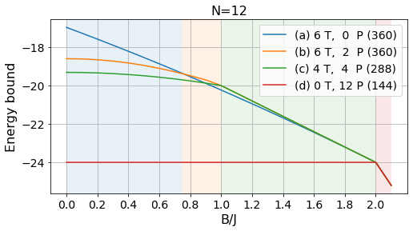
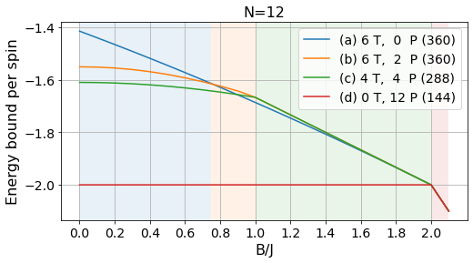
N = 24
confs = [np.arange(0, N, 2)+N,
np.concatenate([np.arange(p*(N//4)+1, (p+1)*N//4-1, 2) for p in range(4)] + [np.array([p*N//4]) for p in range(4)])+N,
np.arange(0, N, 3)+N,
np.arange(0, 1),
np.concatenate([np.arange(p*(N//3)+1, (p+1)*N//3-1, 2) for p in range(3)] + [np.array([p*N//3]) for p in range(3)])+N,
np.concatenate((np.array([0]), np.arange(1, N//2-1, 2), np.array([N//2]), np.arange(N//2+1, N-1, 2)))+N,
np.concatenate((np.array([0]), np.arange(1, N-1, 2)))+N,
# np.sort(np.concatenate((np.arange(0, N, 4), np.arange(1, N, 4))))+N, # tiplet-triplet-pair
# np.arange(0, N, 4)+N, # triplet-pair-pair
]
Bs = np.arange(0, 2.2, 0.1)
energies_24, params_24, layouts_24 = test_configs(confs, N, Bs)
save_tests(energies_24, params_24, layouts_24, N)# Load previous results
Bs = np.arange(0, 2.2, 0.1)
energies_24, params_24, layouts_24 = load_tests(24)labels = ['(a) 12 T, 0 P', '(b) 12 T, 4 P', '(c) 8 T, 8 P', '(d) 0 T, 24 P']
# Absolute bounds
plot_tests(energies_24[:, :-3], params_24[:-3], labels, Bs)
plt.title("N=24", fontsize=16);
plt.savefig("../figures/pattern_test_N24.pdf", bbox_inches="tight")
# Normalized bounds
plot_tests(energies_24[:, :-3]/24, params_24[:-3], labels, Bs, norm=True)
plt.title("N=24", fontsize=16);
plt.savefig("../figures/pattern_test_N24_norm.pdf", bbox_inches="tight")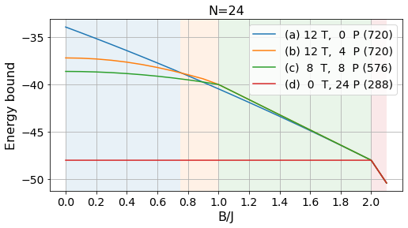
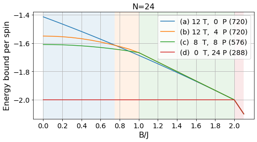
N = 36
confs = [np.arange(0, N, 2)+N,
np.concatenate([np.arange(p*(N//6)+1, (p+1)*N//6-1, 2) for p in range(6)] + [np.array([p*N//6]) for p in range(6)])+N,
np.arange(0, N, 3)+N,
np.arange(0, 1),
np.concatenate([np.arange(p*(N//4)+1, (p+1)*N//4-1, 2) for p in range(4)] + [np.array([p*N//4]) for p in range(4)])+N,
np.concatenate([np.arange(p*(N//3)+1, (p+1)*N//3-1, 2) for p in range(3)] + [np.array([p*N//3]) for p in range(3)])+N,
np.concatenate((np.array([0]), np.arange(1, N//2-1, 2), np.array([N//2]), np.arange(N//2+1, N-1, 2)))+N,
np.concatenate((np.array([0]), np.arange(1, N-1, 2)))+N,
# np.sort(np.concatenate((np.arange(0, N, 4), np.arange(1, N, 4))))+N, # tiplet-triplet-pair
# np.arange(0, N, 4)+N, # triplet-pair-pair
]
Bs = np.arange(0, 2.2, 0.1)
energies_36, params_36, layouts_36 = test_configs(confs, N, Bs)
save_tests(energies_36, params_36, layouts_36, N)# Load previous results
Bs = np.arange(0, 2.2, 0.1)
energies_36, params_36, layouts_36 = load_tests(36)labels = ['(a) 18 T, 0 P', '(b) 18 T, 6 P', '(c) 12 T, 12 P', '(d) 0 T, 36 P']
# Absolute bounds
plot_tests(energies_36[:, :-3], params_36[:-3], labels, Bs)
plt.title("N=36", fontsize=16);
plt.savefig("../figures/pattern_test_N36.pdf", bbox_inches="tight")
# Normalized bounds
plot_tests(energies_36[:, :-3]/36, params_36[:-3], labels, Bs, norm=True)
plt.title("N=36", fontsize=16);
plt.savefig("../figures/pattern_test_N36_norm.pdf", bbox_inches="tight")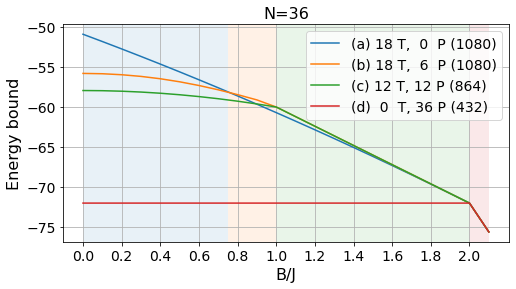
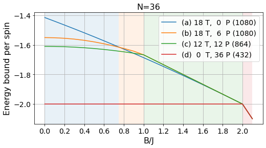
Comparison between different lower bound methods
We compare the performance of our SdP-based approach with other techniques developed to lower bound the ground state energy of many-body Hamiltonians. See the SdP docs for more details about the methods.
Executing the following cells you will reproduce Figure 10 from Appendix D.
from bounce.sdp import SdPEnergySolver, SdPEnergyAndersonSolver, SdPEnergyUskovLichkovskiySolverdef compare_bounds(N, B_values, rdm_size=5):
"Returns the energy bounds obtained with Anderson, Uskov-Lichkovskiy and our methods."
layouts = [[np.sort(np.arange(i, i + rdm_size)%N) for i in np.arange(0, N, rdm_size - s)]
for s in range(1, rdm_size)]
anderson, uskov, our_bounds = [], [], [[] for _ in range(len(layouts))]
anderson_solver = SdPEnergyAndersonSolver()
uskov_solver = SdPEnergyUskovLichkovskiySolver()
our_solver = SdPEnergySolver()
J = 1
for B in tqdm(B_values):
H = XXHamiltonian(Chain1D(N), B, J)
anderson.append(anderson_solver.solve(H.to_sdp(), cluster_size=rdm_size))
uskov.append(uskov_solver.solve(H.to_sdp, cluster_size=rdm_size))
for layout, bounds in zip(layouts, our_bounds):
bounds.append(our_solver.solve(H.to_sdp(), layout))
return (anderson, uskov, *our_bounds)N = 8
rdm_size = 5
Bs = np.arange(0, 3.1, 0.1) # Main plot with large spacing
Bs_inset = np.arange(0, 0.11, 0.01) # Finer grid for the inset# Data for main plot
compare_data = compare_bounds(N, Bs, rdm_size=rdm_size)
comparison_path = Path(f"../benchmarks/anderson_uskov_comparison_N{N}_cs{rdm_size}.pkl")
comparison_path.mkdir(exist_ok=True)
with open(comparison_path, 'wb') as f:
pickle.dump(compare_data, f, protocol=pickle.HIGHEST_PROTOCOL)# Data for inset
inset_data = compare_bounds(N, Bs_inset, rdm_size=rdm_size)
inset_path = Path(f"../benchmarks/anderson_uskov_comparison_N{N}_cs{rdm_size}_inset.pkl")
inset_path.mkdir(exist_ok=True)
with open(inset_path, 'wb') as f:
pickle.dump(inset_data, f, protocol=pickle.HIGHEST_PROTOCOL)# Load previous results
N = 8
Bs = np.arange(0, 3.1, 0.1)
Bs_inset = np.arange(0, 0.11, 0.01)
comparison_path = Path(f"../benchmarks/anderson_uskov_comparison_N{N}_cs{rdm_size}.pkl")
with open(comparison_path, 'rb') as f:
comparison = pickle.load(f)
inset_path = Path(f"../benchmarks/anderson_uskov_comparison_N{N}_cs{rdm_size}_inset.pkl")
with open(inset_path, 'rb') as f:
inset = pickle.load(f)figsize = (8, 5)
fontsize, labelsize = 16, 14
plot_data = comparison[:-1]
inset_data = inset[:-1]
labels = ['Anderson bound', 'TI bound', '1-body overlap', '2-body overlap', '3-body overlap']
fig = plt.figure(figsize=figsize)
ax1 = fig.add_axes([0.1, 0.1, 0.9, 0.8])
ax2 = fig.add_axes([0.19, 0.17, 0.42, 0.45])
for bounds, ins, label in zip(plot_data, inset_data, labels):
ax1.plot(Bs, np.array(bounds)/N, linewidth=2.2, label=label)
ax2.plot(Bs_inset, np.array(ins)/N, linewidth=2)
ax1.grid()
ax1.legend(fontsize=labelsize, loc="upper right")
ax1.set_xticks(Bs[::5])
ax1.set_xlabel("B/J", fontsize=fontsize)
ax1.set_ylabel("Energy bound per spin", fontsize=fontsize)
ax1.tick_params(labelsize=labelsize);
ax2.grid()
ax2.set_ylim([-1.375, -1.33])
ax2.set_xlim([-0.002, 0.075])
# ax2.set_yticks([-1.5, -1.45, -1.4, -1.35]);
plt.savefig("../figures/comparison_anderson_uskov.pdf", bbox_inches="tight")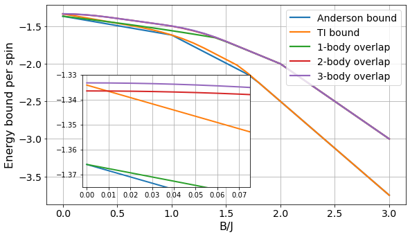